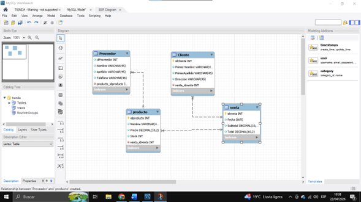
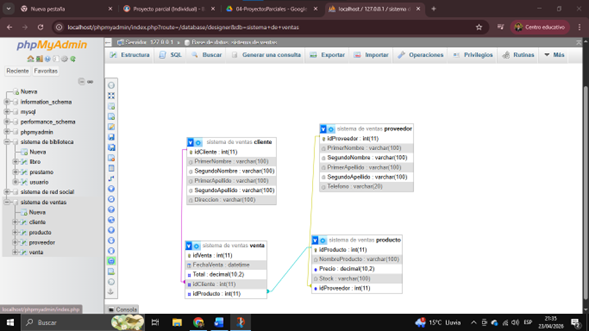
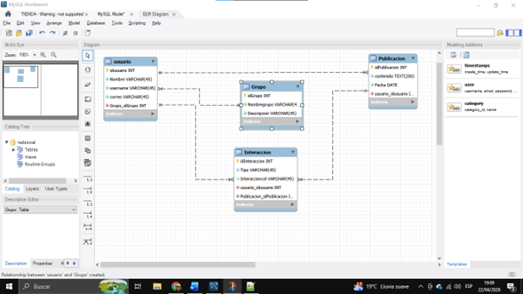

En este proyecto se desarrolló la implementación de una base de datos, donde se aprendió a estructurar información de manera organizada utilizando tablas, relaciones y consultas. Se aplicaron conceptos fundamentales como el manejo de datos, normalización y diseño lógico, permitiendo comprender cómo funcionan los sistemas de almacenamiento de información en aplicaciones reales.


